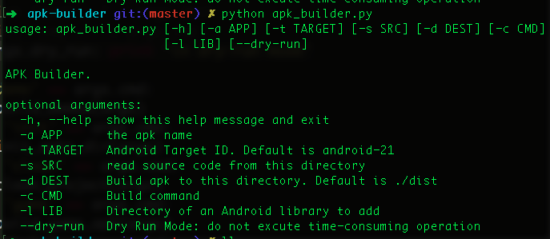
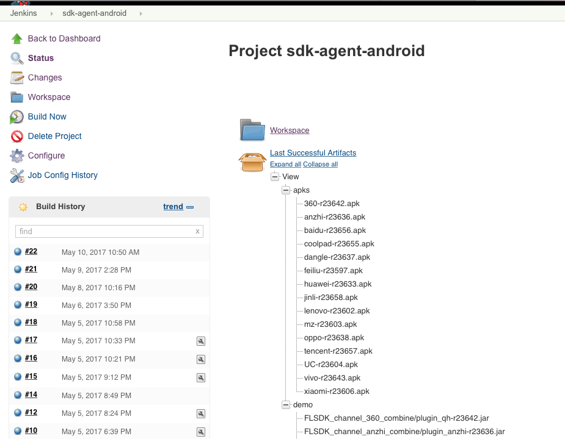
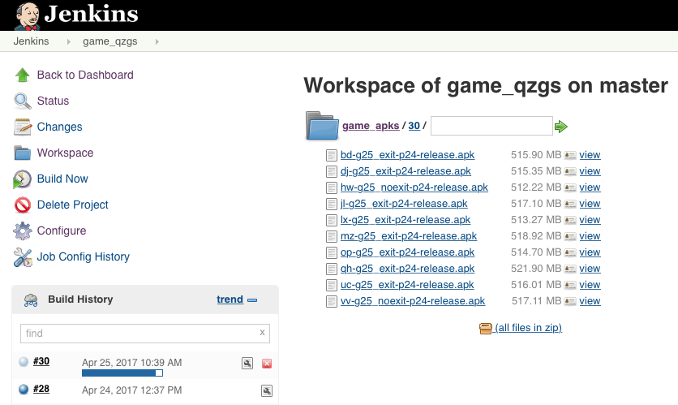

1. java 1.8.x
2. apache ant 1.8+
2. python 2.7.x
3. Android SDK command line tools
4. git 2.x
➜ ~ java -version
java version "1.8.0_20"
➜ ~ python -V
Python 2.7.11
➜ ~ ant -version
Apache Ant version 1.8.0 compiled on February 1 2010
➜ ~ git --version
git version 2.11.0 (Apple Git-81)
➜ ~ android list target
Available Android targets:
----------
id: 6 or "android-21"
Name: Android 5.0.1
Type: Platform
API level: 21
Revision: 2
Skins: HVGA, QVGA, WQVGA400, WQVGA432, WSVGA, WVGA800 (default), WVGA854, WXGA720, WXGA800, WXGA800-7in
Tag/ABIs : no ABIs.
...
$ android create project \
--target 1 \
--name MyName \
--path . \
--activity MyActivity \
--package com.yourdomain.yourproject
...
Added file ./AndroidManifest.xml
Added file ./build.xml
Added file ./proguard-project.txt
$ ant debug
...
debug:
BUILD SUCCESSFUL
Total time: 7 seconds
$ ll bin/*.apk
14444 Apr 21 07:41 bin/MyName-debug-unaligned.apk
14452 Apr 21 07:41 bin/MyName-debug.apk
# 查看apk包名
$ aapt dump badging <path-to-apk> | grep package
package: name='com.tencent.xxxx.xxx' versionCode='1' versionName='1.0.2' platformBuildVersionName='5.0.1-1624448'
# 按包名删除已经安装了的包
$ adb uninstall com.tencent.xxxx.xxx
$ adb install xx-p18-release.apk
# 获取APK中的证书摘要
keytool -list -printcert -jarfile <apk file>
...
Certificate fingerprints:
MD5: E1:2B:2A:28:23:6D:39:1C:F3:D3:3F:80:B3:30:10:83
SHA1: xx:xx:....
# 获取证书摘要(SHA1)
-bash-4.1$ keytool -list -keystore <keystore file>
Enter keystore password:
...
Certificate fingerprint (SHA1): xx:xx:....

➜ sdk-u3d-plugins git:(master) ✗ python apk_builder.py -s demo.ini -d /tmp/apk_builder/dist_0424 -c demo
➜ sdk-u3d-plugins git:(master) ✗ ll /tmp/apk_builder/dist_0424
total 143664
-rw-r--r-- 1 liyan wheel 11M Apr 24 19:54 360-r23546.apk
-rw-r--r-- 1 liyan wheel 5.1M Apr 24 19:58 UC-r23535.apk
-rw-r--r-- 1 liyan wheel 3.5M Apr 24 19:54 anzhi-r23538.apk
-rw-r--r-- 1 liyan wheel 4.7M Apr 24 19:55 baidu-r23516.apk
-rw-r--r-- 1 liyan wheel 3.3M Apr 24 19:55 coolpad-r23262.apk
-rw-r--r-- 1 liyan wheel 5.3M Apr 24 19:56 dangle-r23537.apk
-rw-r--r-- 1 liyan wheel 1.8M Apr 24 19:56 feiliu-r23566.apk
-rw-r--r-- 1 liyan wheel 1.0M Apr 24 19:56 huawei-r23567.apk
-rw-r--r-- 1 liyan wheel 5.9M Apr 24 19:56 jinli-r23551.apk
-rw-r--r-- 1 liyan wheel 2.7M Apr 24 19:57 lenovo-r23569.apk
-rw-r--r-- 1 liyan wheel 7.8M Apr 24 19:57 mz-r23514.apk
-rw-r--r-- 1 liyan wheel 3.5M Apr 24 19:57 oppo-r23541.apk
-rw-r--r-- 1 liyan wheel 3.3M Apr 24 19:57 tencent-r23570.apk
-rw-r--r-- 1 liyan wheel 5.9M Apr 24 19:58 vivo-r23562.apk
-rw-r--r-- 1 liyan wheel 5.6M Apr 24 19:59 xiaomi-r23568.apk
game=../game_apks/g47_exit
vc=1
vn=1.0.2
plugins="az bd cp dj fl hw jl lx mz qh op uc vv xm yyb"
cd sdk-u3d-plugins; git pull
for p in $plugins; do
echo "building... $p " `date +%H:%M:%S`
cd ../${p}_apk; rm -rf build.log game
python apk_builder.py -a qzgs -s $game -d $p -c game -vc $vc -vn=$vn
done
python apk_builder.py -a qzgs -s ../games/g27_exit_100 -d bd -c game --dry-run


END
| Table of Contents | t |
|---|---|
| Exposé | ESC |
| Full screen slides | e |
| Presenter View | p |
| Source Files | s |
| Slide Numbers | n |
| Toggle screen blanking | b |
| Show/hide slide context | c |
| Notes | 2 |
| Help | h |